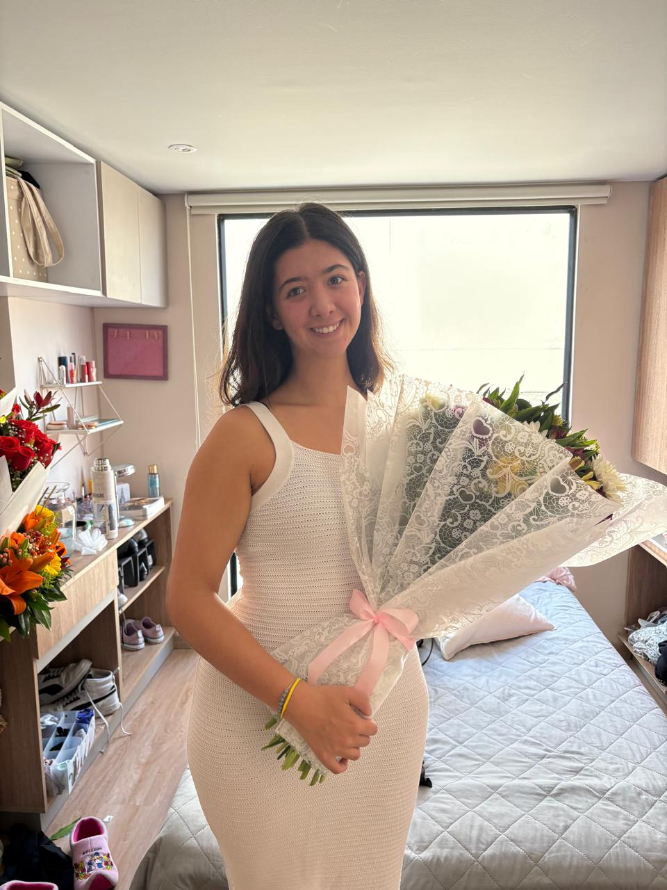

Taller de Autoconocimiento · Proyecto Final
Manuela
Soy lo que construí lejos de casa.
El Taller de Autoconocimiento fue el espacio que me pidió pausar y mirarme de frente antes de empezar el siguiente capítulo. Esta página es el registro honesto de lo que encontré.
